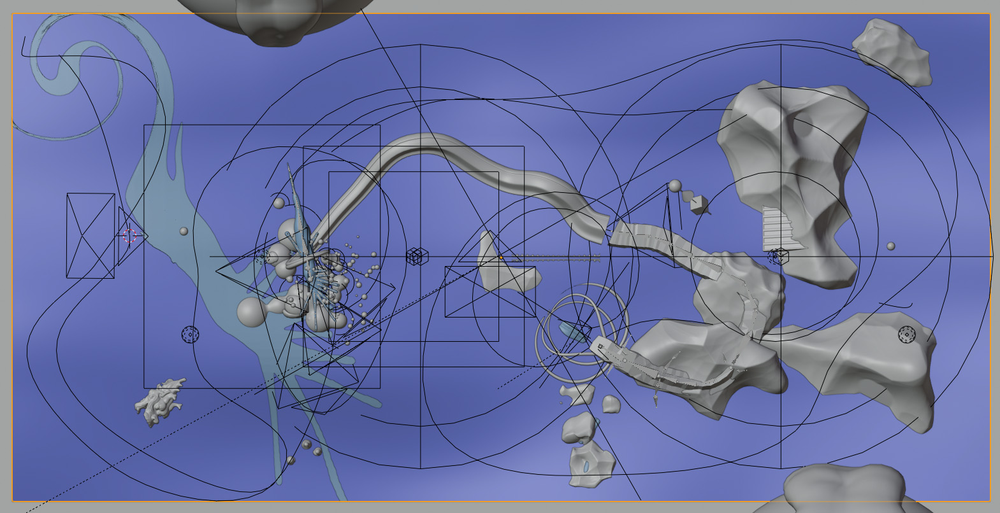

1. A still of the video 'Centuries of Selves', with Dora Ramljak, 2020.
1.
2.
3.
4.
5.

6.
Centuries of Selves, 2020
What will community be like in the future? Will it survive the ever growing individualism in the midst of the pandemic and ecological changes? Will we lose the ability to communicate, to interact and to listen to each other’s words? Maybe words will stop having meanings. What remains will be humming noises in the ears of the confined ambient space.
Centuries of Selves is a loop animation giving the illusion of community. It reflects on the current state of isolation caused by the Covid-19 pandemic, emphasizing further the underlying individualistic tendency that governs our modern society.
The landscape is inspired by white circles painted at a park in Rotterdam. They are to measure the safety distances between groups of people.
In collaboration with Dora Ramljak. Costume by Anouk Van Kampen Wieling. Sound by Thomas Parigi. And Sol Pagel as main model and assistant.
We must learn to speak with ghosts. for specters disturb the administration of forgetting, and the hauntings of popular memory will return to challenge the great forgettings of official history.
—Anne McClintock. Monster: A Fugue in Fire and Ice. 2020.
1.
2.
3.
4.
5.
6.
7.
The New Pangasius, 2020
If the world’s water is transforming, so are its fish. When enough fishes die, their souls will gather and wake us up at night. The panoramic map of ‘The New Pangasius’ is a constellation of both found and made materials speaking of the highly commercialized and cultivated species of catfish in Vietnam, the Pangasius. Through the use of animated folktales, witty conversations, sketchy found footage and plasticky virtual objects, the project tries, without the need of scientific precision, to prove and reveal the complexities surrounding the chain of supply of the Pangasius fish.
The animation is divided in 6 chapters: The Call, 100 Eggs, Soulless Babies, Mother of Water, Skins and Defrost. Each chapter speaks of the different aspects of the Pangasius production, loosely related to Vietnamese history, its folklore and its relationship to other world events.
Supoprting voices by Lance Laoyan & Katie Pelikan. Found footages from Đồng Tháp Quê Tôi. And photo documentation by Marcin Liminowicz.
Exhibited at the KABK Graduation Show 2020.
1. A still of the video '5°C And Above', with Marcin Liminowicz, 2020.
1.
2.
3.
5°C And Above, 2020
How long does it take to defrost a fish? To preserve its flavour, we must submerge it in cold water — a quarantined environment, from six to eight hours. What is left then when the ice is gone? In the mix-media video work Trang Ha and Marcin Liminowicz explore the porous border between digital and organic environment, looking closer into the fragile nature of both human and non-human bodies. The tension between stillness and movement, the preserving of corporeal well-being and the alarming speed of mass food production. What we see directly are details of the imperfect bodies captured in the moment of daily exercise and a 3D render of a familiar shape, similar to that of fish.
In collaboration with Marcin Liminowicz. Sound by Lance Laoyan. Acting by Helena, Sergi & Anni. And special thanks to all human and machines involved in the project.
Exhibited online at PCAI Anthropocene On Hold, Greece.